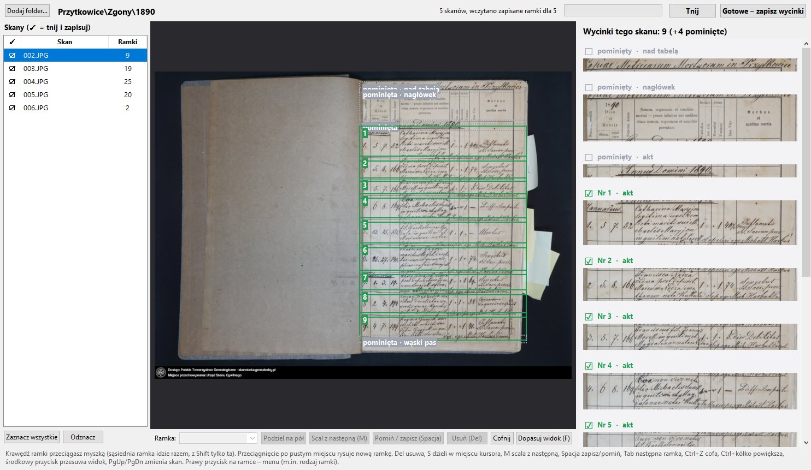
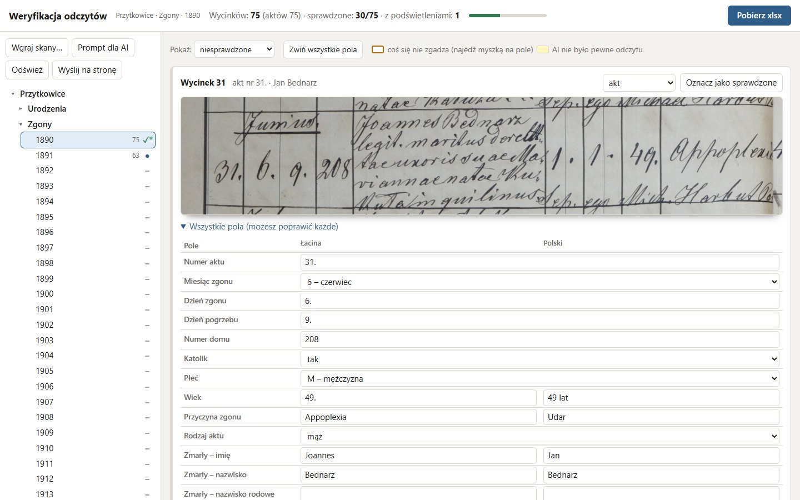

Tartak i Weryfikacja
Dwa programy, które zamieniają zdjęcia XIX-wiecznych ksiąg zgonów w uporządkowane dane: Tartak tnie skany na pojedyncze akty, a Weryfikacja pozwala sprawdzić i poprawić to, co z łaciny odczytała sztuczna inteligencja.


Jak to działa
Skany
Zdjęcia ksiąg metrykalnych, rocznik po roczniku: setki stron pisanych ręcznie po łacinie, w tabelach o różnym układzie.
Cięcie
Tartak znajduje granice aktów: linie między wierszami tabeli, a gdy ich nie ma, rzędy cyfr w kolumnach. Nagłówki, puste wiersze i dopiski proboszcza też dostają własne ramki, więc nic nie ginie.
Odczyt AI
Model językowy czyta każdy wycinek osobno i zapisuje pola aktu po łacinie i po polsku. Tłumaczenia trzymają się słowniczka, a niepewne odczyty AI oznacza samo.
Weryfikacja
Człowiek porównuje pola z wycinkiem. Reguły pilnują typowych błędów: przerwana numeracja, niemożliwa data, płeć niezgodna z imieniem, małżonek w wieku dziecka, nazwisko dziecka inne niż ojca.
Eksport
Sprawdzony rocznik trafia do Excela, z osobnym arkuszem dla łaciny i dla polskiego, a stamtąd do wyszukiwarki Wadobaza.
Oba programy działają na komputerze (Python). Tu jest tylko podgląd: skany i odczyty nie są publiczne, a zrzuty pokazują pracę na księdze zgonów parafii Przytkowice z 1890 roku.